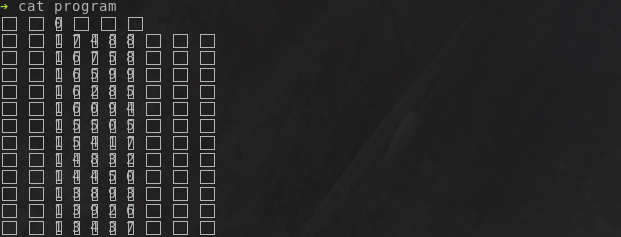
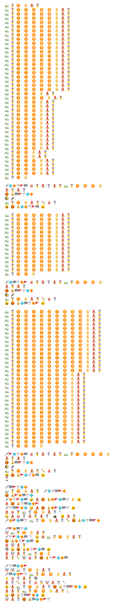
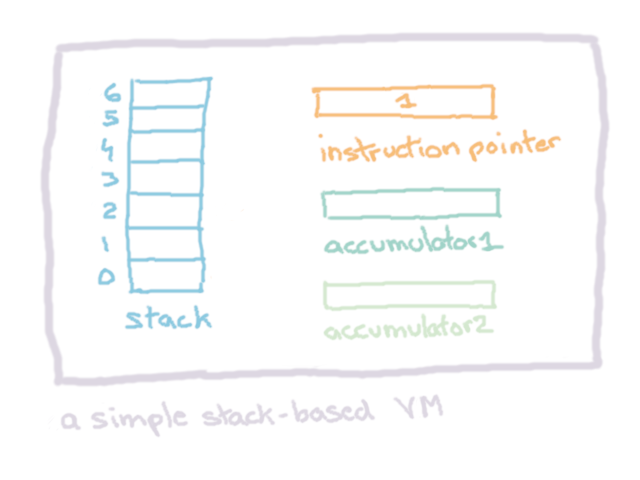
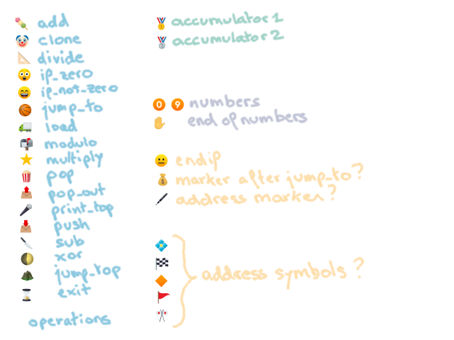
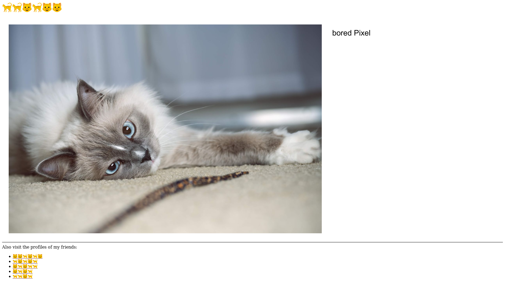
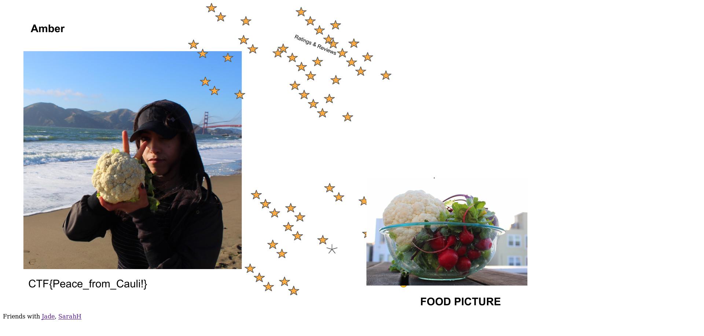

GoogleCTF Beginner's Quest 2019 - FriendSpaceBookPlusAllAccessRedPremium.com
Description
Having snooped around like the expert spy you were never trained to be, you found something that takes your interest: “Cookie/www.FriendSpaceBookPlusAllAccessRedPremium.com” But unbeknownst to you, it was only the 700nm Wavelength herring rather than a delicious cookie that you could have found. It looks exactly like a credential for another system. You find yourself in search of a friendly book to read. Having already spent some time trying to find a way to gain more intelligence… and learn about those fluffy creatures, you (several)-momentarily divert your attention here. It’s a place of all the individuals in the world sharing large amounts of data with one another. Strangely enough, all of the inhabitants seem to speak using this weird pictorial language. And there is hot disagreement over what the meaning of an eggplant is. But not much Cauliflower here. They must be very private creatures. SarahH has left open some proprietary tools, surely running this will take you to them. Decipher this language and move forth!
Solving
➔ file *
program: UTF-8 Unicode text
vm.py: Python script, UTF-8 Unicode text executable
So, a program and a Python script. Well, well, well.

Given how my terminal chokes when displaying it, it’s either japanese or emojis.
Right, let’s try to run that program!
$ python vm.py program
Running ....
http://emoji-t0anaxn
And now it’s hanging… I don’t know what it’s trying to print, but it’s obviously painful :D
Right. Let’s find a font which supports emojis, cause I’m not thrilled by the prospect of reversing a bunch of squares. I picked ttf-joypixels, mostly because it was the first when querying “emoji” in Arch Linux repositories and can be installed with a simple pacman -S ttf-joypixels.
Take 2, let’s open program with a graphical text editor!

That’s better, I guess…? At least it’s not a bunch of squares and it’s colorful!
Okay, now, take a look at vm.py:
import sys
# Implements a simple stack-based VM
class VM:
def __init__(self, rom):
self.rom = rom
self.accumulator1 = 0
self.accumulator2 = 0
self.instruction_pointer = 1
self.stack = []
def step(self):
cur_ins = self.rom[self.instruction_pointer]
self.instruction_pointer += 1
fn = VM.OPERATIONS.get(cur_ins, None)
if cur_ins[0] == '🖋':
return
if fn is None:
raise RuntimeError("Unknown instruction '{}' at {}".format(
repr(cur_ins), self.instruction_pointer - 1))
else:
fn(self)
def add(self):
self.stack.append(self.stack.pop() + self.stack.pop())
def sub(self):
a = self.stack.pop()
b = self.stack.pop()
self.stack.append(b - a)
def if_zero(self):
if self.stack[-1] == 0:
while self.rom[self.instruction_pointer] != '😐':
if self.rom[self.instruction_pointer] in ['🏀', '⛰']:
break
self.step()
else:
self.find_first_endif()
self.instruction_pointer += 1
def if_not_zero(self):
if self.stack[-1] != 0:
while self.rom[self.instruction_pointer] != '😐':
if self.rom[self.instruction_pointer] in ['🏀', '⛰']:
break
self.step()
else:
self.find_first_endif()
self.instruction_pointer += 1
def find_first_endif(self):
while self.rom[self.instruction_pointer] != '😐':
self.instruction_pointer += 1
def jump_to(self):
marker = self.rom[self.instruction_pointer]
if marker[0] != '💰':
print('Incorrect symbol : ' + marker[0])
raise SystemExit()
marker = '🖋' + marker[1:]
self.instruction_pointer = self.rom.index(marker) + 1
def jump_top(self):
self.instruction_pointer = self.stack.pop()
def exit(self):
print('\nDone.')
raise SystemExit()
def print_top(self):
sys.stdout.write(chr(self.stack.pop()))
sys.stdout.flush()
def push(self):
if self.rom[self.instruction_pointer] == '🥇':
self.stack.append(self.accumulator1)
elif self.rom[self.instruction_pointer] == '🥈':
self.stack.append(self.accumulator2)
else:
raise RuntimeError('Unknown instruction {} at position {}'.format(
self.rom[self.instruction_pointer], str(self.instruction_pointer)))
self.instruction_pointer += 1
def pop(self):
if self.rom[self.instruction_pointer] == '🥇':
self.accumulator1 = self.stack.pop()
elif self.rom[self.instruction_pointer] == '🥈':
self.accumulator2 = self.stack.pop()
else:
raise RuntimeError('Unknown instruction {} at position {}'.format(
self.rom[self.instruction_pointer], str(self.instruction_pointer)))
self.instruction_pointer += 1
def pop_out(self):
self.stack.pop()
def load(self):
num = 0
if self.rom[self.instruction_pointer] == '🥇':
acc = 1
elif self.rom[self.instruction_pointer] == '🥈':
acc = 2
else:
raise RuntimeError('Unknown instruction {} at position {}'.format(
self.rom[self.instruction_pointer], str(self.instruction_pointer)))
self.instruction_pointer += 1
while self.rom[self.instruction_pointer] != '✋':
num = num * 10 + (ord(self.rom[self.instruction_pointer][0]) - ord('0'))
self.instruction_pointer += 1
if acc == 1:
self.accumulator1 = num
else:
self.accumulator2 = num
self.instruction_pointer += 1
def clone(self):
self.stack.append(self.stack[-1])
def multiply(self):
a = self.stack.pop()
b = self.stack.pop()
self.stack.append(b * a)
def divide(self):
a = self.stack.pop()
b = self.stack.pop()
self.stack.append(b // a)
def modulo(self):
a = self.stack.pop()
b = self.stack.pop()
self.stack.append(b % a)
def xor(self):
a = self.stack.pop()
b = self.stack.pop()
self.stack.append(b ^ a)
OPERATIONS = {
'🍡': add,
'🤡': clone,
'📐': divide,
'😲': if_zero,
'😄': if_not_zero,
'🏀': jump_to,
'🚛': load,
'📬': modulo,
'⭐': multiply,
'🍿': pop,
'📤': pop_out,
'🎤': print_top,
'📥': push,
'🔪': sub,
'🌓': xor,
'⛰': jump_top,
'⌛': exit
}
if __name__ == '__main__':
if len(sys.argv) != 2:
print('Missing program')
raise SystemExit()
with open(sys.argv[1], 'r') as f:
print('Running ....')
all_ins = ['']
all_ins.extend(f.read().split())
vm = VM(all_ins)
while 1:
vm.step()
It looks like a lot of code, but let’s break it down. vm.py is the implementation of a stack-based virtual machine. It means it can interpret the emoji language just like a real computer can deal with regular assembly.

Our VM has 4 components:
- a stack: being stack-based, this is the most central element. It’s used for everything, storing stuff, executing stuff and more!
- an instruction pointer: keeps track of the current instruction. It can be modified to jump to other instructions and thus have
if/else,forandwhileconstructs. - accumulator1 and accumulator2: storage space, similar to registers, each of them can hold a value.
The rest of the functions in vm.py implements the possible operations, and their names are pretty self descriptive. For example, xor() will remove the two values on the top on the stack, compute a xor b and put the result on the stack.
Translator
Okay, emojis are nice but not it’s not the most readable thing in the world. It would be more readable if I could translate it to something actually readable ie text.
And for that, you need to identify the meaning of each symbol! Operations are easy, as they are nicely listed in a dictionary in vm.py. You can get most of the other symbols by reading the rest of vm.py.

Apart from the money bag, the pen emoji and the weird cluster of maybe-address-symbols, they are fairly straight-forward. So I wrote a translator script in Python, leaving the emojis I wasn’t sure about untranslated, to see where they would be used in the program.
#!/usr/bin/env python
"""
Translate emojis to kinda assembly
Outputs a file <program>.translated
Usage: ./translator.py <program_to_translate>
"""
import sys
EMOJIS = {
'🍡': "add",
'🤡': "clone",
'📐': "divide",
'😲': "if_zero",
'😄': "if_not_zero",
'🏀': "jump_to",
'🚛': "load",
'📬': "modulo",
'⭐': "multiply",
'🍿': "pop",
'📤': "pop_out",
'🎤': "print_top",
'📥': "push",
'🔪': "sub",
'🌓': "xor",
'⛰': "jump_top",
'⌛': "exit",
'0️⃣': "0",
'1️⃣': "1",
'2️⃣': "2",
'3️⃣': "3",
'4️⃣': "4",
'5️⃣': "5",
'6️⃣': "6",
'7️⃣': "7",
'8️⃣': "8",
'9️⃣': "9",
'✋': "", # end of number
'🥇': "acc1",
'🥈': "acc2",
'😐': "endif",
}
def usage():
print("[!] missing argument")
print("Usage: {} <program_to_translate>".format(sys.argv[0]))
if __name__ == '__main__':
# check that a program was given as argument
if len(sys.argv) != 2:
usage()
raise SystemExit()
# read the content of program
content = []
with open(sys.argv[1], 'r') as f:
content = f.readlines()
# start the translation!
with open("{}.translated".format(sys.argv[1]), "w") as f:
for line in content:
line = line.split()
line_translation = []
for ins in line:
if ins is not '':
try:
line_translation.append(EMOJIS[ins])
except KeyError:
line_translation.append("{}".format(ins))
f.write("{}\n".format(" ".join(line_translation)))
Let’s run it and have a look at the resulting program.translated:
load acc1 0 push acc1
load acc1 1 7 4 8 8 push acc1
load acc1 1 6 7 5 8 push acc1
load acc1 1 6 5 9 9 push acc1
load acc1 1 6 2 8 5 push acc1
load acc1 1 6 0 9 4 push acc1
load acc1 1 5 5 0 5 push acc1
load acc1 1 5 4 1 7 push acc1
load acc1 1 4 8 3 2 push acc1
load acc1 1 4 4 5 0 push acc1
load acc1 1 3 8 9 3 push acc1
load acc1 1 3 9 2 6 push acc1
load acc1 1 3 4 3 7 push acc1
load acc1 1 2 8 3 3 push acc1
load acc1 1 2 7 4 1 push acc1
load acc1 1 2 5 3 3 push acc1
load acc1 1 1 5 0 4 push acc1
load acc1 1 1 3 4 2 push acc1
load acc1 1 0 5 0 3 push acc1
load acc1 1 0 5 5 0 push acc1
load acc1 1 0 3 1 9 push acc1
load acc1 9 7 5 push acc1
load acc1 1 0 0 7 push acc1
load acc1 8 9 2 push acc1
load acc1 8 9 3 push acc1
load acc1 6 6 0 push acc1
load acc1 7 4 3 push acc1
load acc1 2 6 7 push acc1
load acc1 3 4 4 push acc1
load acc1 2 6 4 push acc1
load acc1 3 3 9 push acc1
load acc1 2 0 8 push acc1
load acc1 2 1 6 push acc1
load acc1 2 4 2 push acc1
load acc1 1 7 2 push acc1
load acc1 7 4 push acc1
load acc1 4 9 push acc1
load acc1 1 1 9 push acc1
load acc1 1 1 3 push acc1
load acc1 1 1 9 push acc1
load acc1 1 0 6 push acc1
load acc2 1
🖋💠🔶🎌🚩🏁 pop acc1 push acc2 push acc1 load acc1 3 8 9
push acc1 push acc2
jump_to 💰🏁🚩🎌💠🔶
xor print_top
load acc1 1 push acc1 add pop acc2
if_not_zero jump_to 💰💠🔶🎌🚩🏁 endif
load acc1 9 8 4 2 6 push acc1
load acc1 9 7 8 5 0 push acc1
load acc1 9 7 6 0 4 push acc1
load acc1 9 7 2 8 0 push acc1
load acc1 9 6 8 1 5 push acc1
load acc1 9 6 4 4 3 push acc1
load acc1 9 6 3 5 4 push acc1
load acc1 9 5 9 3 4 push acc1
load acc1 9 4 8 6 5 push acc1
load acc1 9 4 9 5 2 push acc1
load acc1 9 4 6 6 9 push acc1
load acc1 9 4 4 4 0 push acc1
load acc1 9 3 9 6 9 push acc1
load acc1 9 3 7 6 6 push acc1
load acc2 9 9
🖋💠🏁🎌🔶🚩 pop acc1 push acc2 push acc1 load acc1 5 6 8
push acc1 push acc2
jump_to 💰🏁🚩🎌💠🔶
xor print_top
load acc1 1 push acc1 add pop acc2
if_not_zero jump_to 💰💠🏁🎌🔶🚩 endif
load acc1 1 0 1 1 4 1 0 5 8 push acc1
load acc1 1 0 1 0 6 0 2 0 6 push acc1
load acc1 1 0 1 0 3 0 0 5 5 push acc1
load acc1 1 0 0 9 9 8 9 6 6 push acc1
load acc1 1 0 0 8 8 7 9 9 0 push acc1
load acc1 1 0 0 7 6 7 0 8 5 push acc1
load acc1 1 0 0 7 0 7 0 3 6 push acc1
load acc1 1 0 0 6 5 6 1 1 1 push acc1
load acc1 1 0 0 4 0 4 0 9 4 push acc1
load acc1 1 0 0 1 6 0 9 2 2 push acc1
load acc1 1 0 0 1 3 1 0 1 9 push acc1
load acc1 1 0 0 1 1 1 1 0 0 push acc1
load acc1 1 0 0 0 5 9 9 2 6 push acc1
load acc1 1 0 0 0 4 9 9 8 2 push acc1
load acc1 1 0 0 0 3 0 0 4 5 push acc1
load acc1 9 9 8 9 9 9 7 push acc1
load acc1 9 9 8 1 8 5 8 push acc1
load acc1 9 9 8 0 8 1 5 push acc1
load acc1 9 9 7 8 8 4 2 push acc1
load acc1 9 9 6 5 7 9 4 push acc1
load acc1 9 9 5 7 5 6 4 push acc1
load acc1 9 9 3 8 3 0 4 push acc1
load acc1 9 9 3 5 4 2 7 push acc1
load acc1 9 9 3 2 2 8 9 push acc1
load acc1 9 9 3 1 4 9 4 push acc1
load acc1 9 9 2 7 3 8 8 push acc1
load acc1 9 9 2 6 3 7 6 push acc1
load acc1 9 9 2 3 2 1 3 push acc1
load acc1 9 9 2 1 3 9 4 push acc1
load acc1 9 9 1 9 1 5 4 push acc1
load acc1 9 9 1 8 0 8 2 push acc1
load acc1 9 9 1 6 2 3 9 push acc1
load acc2 7 6 5
🖋🚩💠🎌🔶🏁 pop acc1 push acc2 push acc1 load acc1 1 0 2 3
push acc1 push acc2
jump_to 💰🏁🚩🎌💠🔶
xor print_top
load acc1 1 push acc1 add pop acc2
if_not_zero jump_to 💰🚩💠🎌🔶🏁 endif
exit
🖋🏁🚩🎌💠🔶
load acc1 2 push acc1 🖋💠🎌🏁🚩🔶
jump_to 💰🚩🔶🏁🎌💠
🖋🔶🎌🚩💠🏁 if_zero pop_out jump_to 💰🔶🚩💠🏁🎌 endif
pop_out jump_to 💰🎌🏁💠🔶🚩
🖋🎌🏁🚩🔶💠 if_zero pop_out jump_to 💰🔶🚩💠🏁🎌 endif
pop_out pop acc1 load acc2 1 push acc2 sub
if_zero pop_out pop acc2 push acc1 push acc2 jump_top endif push acc1
🖋🔶🚩💠🏁🎌 load acc2 1 push acc2 add jump_to 💰💠🎌🏁🚩🔶
🖋🚩🔶🏁🎌💠
clone load acc1 2 push acc1
🖋🎌🚩💠🔶🏁 sub if_zero pop_out load acc1 1 push acc1
jump_to 💰🔶🎌🚩💠🏁 endif
pop_out clone push acc1
modulo if_zero jump_to 💰🔶🎌🚩💠🏁 endif
pop_out clone push acc1 load acc1 1
push acc1 add clone pop acc1 jump_to 💰🎌🚩💠🔶🏁
🖋🎌🏁💠🔶🚩
clone clone load acc2 0 push acc2
🖋🏁💠🔶🚩🎌 load acc1 1 0 push acc1
multiply pop acc2 push acc1 modulo
push acc2 add pop acc2 pop acc1 clone push acc2 sub
if_zero pop_out load acc2 1 push acc2 jump_to 💰🎌🏁🚩🔶💠 endif
pop_out push acc1 load acc1 1 0 push acc1 divide
if_zero jump_to 💰🎌🏁🚩🔶💠 endif
clone push acc2 jump_to 💰🏁💠🔶🚩🎌
And the meaning of the undecided emojis became evident! They are labels. The pen defines a label on which you can jump, and the money bag to indicate the start of a label when jumping on it. The rest define the “name” of the label.
With that new information, let’s update translator.py to add labels to the EMOJIS dictionnary:
'🖋💠🔶🎌🚩🏁': "label A",
'💰💠🔶🎌🚩🏁': "label A",
'🖋💠🎌🏁🚩🔶': "label B",
'💰💠🎌🏁🚩🔶': "label B",
'🖋💠🏁🎌🔶🚩': "label C",
'💰💠🏁🎌🔶🚩': "label C",
'🖋🚩💠🎌🔶🏁': "label D",
'💰🚩💠🎌🔶🏁': "label D",
'🖋🚩🔶🏁🎌💠': "label E",
'💰🚩🔶🏁🎌💠': "label E",
'🖋🏁🚩🎌💠🔶': "label F",
'💰🏁🚩🎌💠🔶': "label F",
'🖋🏁💠🔶🚩🎌': "label G",
'💰🏁💠🔶🚩🎌': "label G",
'🖋🔶🎌🚩💠🏁': "label H",
'💰🔶🎌🚩💠🏁': "label H",
'🖋🔶🚩💠🏁🎌': "label I",
'💰🔶🚩💠🏁🎌': "label I",
'🖋🎌🏁💠🔶🚩': "label J",
'💰🎌🏁💠🔶🚩': "label J",
'🖋🎌🏁🚩🔶💠': "label K",
'💰🎌🏁🚩🔶💠': "label K",
'🖋🎌🚩💠🔶🏁': "label L",
'💰🎌🚩💠🔶🏁': "label L",
And now, we have a translation free of emojis, at last!
load acc1 0 push acc1
load acc1 1 7 4 8 8 push acc1
load acc1 1 6 7 5 8 push acc1
load acc1 1 6 5 9 9 push acc1
load acc1 1 6 2 8 5 push acc1
load acc1 1 6 0 9 4 push acc1
load acc1 1 5 5 0 5 push acc1
load acc1 1 5 4 1 7 push acc1
load acc1 1 4 8 3 2 push acc1
load acc1 1 4 4 5 0 push acc1
load acc1 1 3 8 9 3 push acc1
load acc1 1 3 9 2 6 push acc1
load acc1 1 3 4 3 7 push acc1
load acc1 1 2 8 3 3 push acc1
load acc1 1 2 7 4 1 push acc1
load acc1 1 2 5 3 3 push acc1
load acc1 1 1 5 0 4 push acc1
load acc1 1 1 3 4 2 push acc1
load acc1 1 0 5 0 3 push acc1
load acc1 1 0 5 5 0 push acc1
load acc1 1 0 3 1 9 push acc1
load acc1 9 7 5 push acc1
load acc1 1 0 0 7 push acc1
load acc1 8 9 2 push acc1
load acc1 8 9 3 push acc1
load acc1 6 6 0 push acc1
load acc1 7 4 3 push acc1
load acc1 2 6 7 push acc1
load acc1 3 4 4 push acc1
load acc1 2 6 4 push acc1
load acc1 3 3 9 push acc1
load acc1 2 0 8 push acc1
load acc1 2 1 6 push acc1
load acc1 2 4 2 push acc1
load acc1 1 7 2 push acc1
load acc1 7 4 push acc1
load acc1 4 9 push acc1
load acc1 1 1 9 push acc1
load acc1 1 1 3 push acc1
load acc1 1 1 9 push acc1
load acc1 1 0 6 push acc1
load acc2 1
label A pop acc1 push acc2 push acc1 load acc1 3 8 9
push acc1 push acc2
jump_to label F
xor print_top
load acc1 1 push acc1 add pop acc2
if_not_zero jump_to label A endif
load acc1 9 8 4 2 6 push acc1
load acc1 9 7 8 5 0 push acc1
load acc1 9 7 6 0 4 push acc1
load acc1 9 7 2 8 0 push acc1
load acc1 9 6 8 1 5 push acc1
load acc1 9 6 4 4 3 push acc1
load acc1 9 6 3 5 4 push acc1
load acc1 9 5 9 3 4 push acc1
load acc1 9 4 8 6 5 push acc1
load acc1 9 4 9 5 2 push acc1
load acc1 9 4 6 6 9 push acc1
load acc1 9 4 4 4 0 push acc1
load acc1 9 3 9 6 9 push acc1
load acc1 9 3 7 6 6 push acc1
load acc2 9 9
label C pop acc1 push acc2 push acc1 load acc1 5 6 8
push acc1 push acc2
jump_to label F
xor print_top
load acc1 1 push acc1 add pop acc2
if_not_zero jump_to label C endif
load acc1 1 0 1 1 4 1 0 5 8 push acc1
load acc1 1 0 1 0 6 0 2 0 6 push acc1
load acc1 1 0 1 0 3 0 0 5 5 push acc1
load acc1 1 0 0 9 9 8 9 6 6 push acc1
load acc1 1 0 0 8 8 7 9 9 0 push acc1
load acc1 1 0 0 7 6 7 0 8 5 push acc1
load acc1 1 0 0 7 0 7 0 3 6 push acc1
load acc1 1 0 0 6 5 6 1 1 1 push acc1
load acc1 1 0 0 4 0 4 0 9 4 push acc1
load acc1 1 0 0 1 6 0 9 2 2 push acc1
load acc1 1 0 0 1 3 1 0 1 9 push acc1
load acc1 1 0 0 1 1 1 1 0 0 push acc1
load acc1 1 0 0 0 5 9 9 2 6 push acc1
load acc1 1 0 0 0 4 9 9 8 2 push acc1
load acc1 1 0 0 0 3 0 0 4 5 push acc1
load acc1 9 9 8 9 9 9 7 push acc1
load acc1 9 9 8 1 8 5 8 push acc1
load acc1 9 9 8 0 8 1 5 push acc1
load acc1 9 9 7 8 8 4 2 push acc1
load acc1 9 9 6 5 7 9 4 push acc1
load acc1 9 9 5 7 5 6 4 push acc1
load acc1 9 9 3 8 3 0 4 push acc1
load acc1 9 9 3 5 4 2 7 push acc1
load acc1 9 9 3 2 2 8 9 push acc1
load acc1 9 9 3 1 4 9 4 push acc1
load acc1 9 9 2 7 3 8 8 push acc1
load acc1 9 9 2 6 3 7 6 push acc1
load acc1 9 9 2 3 2 1 3 push acc1
load acc1 9 9 2 1 3 9 4 push acc1
load acc1 9 9 1 9 1 5 4 push acc1
load acc1 9 9 1 8 0 8 2 push acc1
load acc1 9 9 1 6 2 3 9 push acc1
load acc2 7 6 5
label D pop acc1 push acc2 push acc1 load acc1 1 0 2 3
push acc1 push acc2
jump_to label F
xor print_top
load acc1 1 push acc1 add pop acc2
if_not_zero jump_to label D endif
exit
label F
load acc1 2 push acc1 label B
jump_to label E
label H if_zero pop_out jump_to label I endif
pop_out jump_to label J
label K if_zero pop_out jump_to label I endif
pop_out pop acc1 load acc2 1 push acc2 sub
if_zero pop_out pop acc2 push acc1 push acc2 jump_top endif push acc1
label I load acc2 1 push acc2 add jump_to label B
label E
clone load acc1 2 push acc1
label L sub if_zero pop_out load acc1 1 push acc1
jump_to label H endif
pop_out clone push acc1
modulo if_zero jump_to label H endif
pop_out clone push acc1 load acc1 1
push acc1 add clone pop acc1 jump_to label L
label J
clone clone load acc2 0 push acc2
label G load acc1 1 0 push acc1
multiply pop acc2 push acc1 modulo
push acc2 add pop acc2 pop acc1 clone push acc2 sub
if_zero pop_out load acc2 1 push acc2 jump_to label K endif
pop_out push acc1 load acc1 1 0 push acc1 divide
if_zero jump_to label K endif
clone push acc2 jump_to label G
Ok, what now?
Part 1: A Very Crude Debugger
To understand what the program is doing, and how characters are printed, I modified the code of vm.py to add a “debugger”. The function I target is step() which is called for every instruction:
def step(self):
cur_ins = self.rom[self.instruction_pointer]
self.instruction_pointer += 1
fn = VM.OPERATIONS.get(cur_ins, None)
if cur_ins[0] == '🖋':
return
if fn is None:
raise RuntimeError("Unknown instruction '{}' at {}".format(
repr(cur_ins), self.instruction_pointer - 1))
else:
fn(self)
It saves the current instruction pointer, increments the instruction_pointer and then fetches the function associated to the instruction pointer. I modified it:
def print_state(self):
print("IP: {}".format(self.instruction_pointer - 1))
print(" stack: {}".format(self.stack))
print(" acc1: {}".format(self.accumulator1))
print(" acc2: {}".format(self.accumulator2))
def step(self):
cur_ins = self.rom[self.instruction_pointer]
self.instruction_pointer += 1
fn = VM.OPERATIONS.get(cur_ins, None)
if self.instruction_pointer == 390:
self.print_state()
print(str(fn))
input("press <enter> to continue")
if cur_ins[0] == '🖋':
return
if fn is None:
raise RuntimeError("Unknown instruction '{}' at {}".format(
repr(cur_ins), self.instruction_pointer - 1))
else:
fn(self)
Now we have a print_state() function which outputs the content of the stack and of accumulator1 and accumulator2. We also have the name of the function called with str(fn)
And the line that makes those prints qualify as a debugger: input("press <enter> to continue"), which will pause the program until we want to continue it.
There is also a kind-of breakpoint with the if self.instruction_pointer == 390: so we can skip the loading of the stack.
See if you can spot a pattern in the output of the “debugger”:
$ python vm.py program
Running ....
IP: 389
stack: [0, 17488, 16758, 16599, 16285, 16094, 15505, 15417, 14832, 14450, 13893, 13926, 13437, 12833, 12741, 12533, 11504, 11342, 10503, 10550, 10319, 975, 1007, 892, 893, 660, 743, 267, 344, 264, 339, 208, 216, 242, 172, 74, 49, 119, 113, 119, 1, 106, 2]
acc1: 2
acc2: 389
<function VM.xor at 0x7fec033e6400>
press <enter> to continue
hIP: 389
stack: [0, 17488, 16758, 16599, 16285, 16094, 15505, 15417, 14832, 14450, 13893, 13926, 13437, 12833, 12741, 12533, 11504, 11342, 10503, 10550, 10319, 975, 1007, 892, 893, 660, 743, 267, 344, 264, 339, 208, 216, 242, 172, 74, 49, 119, 113, 2, 119, 3]
acc1: 3
acc2: 389
<function VM.xor at 0x7fec033e6400>
press <enter> to continue
tIP: 389
stack: [0, 17488, 16758, 16599, 16285, 16094, 15505, 15417, 14832, 14450, 13893, 13926, 13437, 12833, 12741, 12533, 11504, 11342, 10503, 10550, 10319, 975, 1007, 892, 893, 660, 743, 267, 344, 264, 339, 208, 216, 242, 172, 74, 49, 119, 3, 113, 5]
acc1: 5
acc2: 389
<function VM.xor at 0x7fec033e6400>
press <enter> to continue
tIP: 389
stack: [0, 17488, 16758, 16599, 16285, 16094, 15505, 15417, 14832, 14450, 13893, 13926, 13437, 12833, 12741, 12533, 11504, 11342, 10503, 10550, 10319, 975, 1007, 892, 893, 660, 743, 267, 344, 264, 339, 208, 216, 242, 172, 74, 49, 4, 119, 7]
acc1: 7
acc2: 389
<function VM.xor at 0x7fec033e6400>
press <enter> to continue
pIP: 389
stack: [0, 17488, 16758, 16599, 16285, 16094, 15505, 15417, 14832, 14450, 13893, 13926, 13437, 12833, 12741, 12533, 11504, 11342, 10503, 10550, 10319, 975, 1007, 892, 893, 660, 743, 267, 344, 264, 339, 208, 216, 242, 172, 74, 5, 49, 11]
acc1: 11
acc2: 389
<function VM.xor at 0x7fec033e6400>
press <enter> to continue
:IP: 389
stack: [0, 17488, 16758, 16599, 16285, 16094, 15505, 15417, 14832, 14450, 13893, 13926, 13437, 12833, 12741, 12533, 11504, 11342, 10503, 10550, 10319, 975, 1007, 892, 893, 660, 743, 267, 344, 264, 339, 208, 216, 242, 172, 6, 74, 101]
acc1: 101
acc2: 389
<function VM.xor at 0x7fec033e6400>
press <enter> to continue
/IP: 389
stack: [0, 17488, 16758, 16599, 16285, 16094, 15505, 15417, 14832, 14450, 13893, 13926, 13437, 12833, 12741, 12533, 11504, 11342, 10503, 10550, 10319, 975, 1007, 892, 893, 660, 743, 267, 344, 264, 339, 208, 216, 242, 7, 172, 131]
acc1: 131
acc2: 389
<function VM.xor at 0x7fec033e6400>
press <enter> to continue
/IP: 389
stack: [0, 17488, 16758, 16599, 16285, 16094, 15505, 15417, 14832, 14450, 13893, 13926, 13437, 12833, 12741, 12533, 11504, 11342, 10503, 10550, 10319, 975, 1007, 892, 893, 660, 743, 267, 344, 264, 339, 208, 216, 8, 242, 151]
acc1: 151
acc2: 389
<function VM.xor at 0x7fec033e6400>
press <enter> to continue
eIP: 389
stack: [0, 17488, 16758, 16599, 16285, 16094, 15505, 15417, 14832, 14450, 13893, 13926, 13437, 12833, 12741, 12533, 11504, 11342, 10503, 10550, 10319, 975, 1007, 892, 893, 660, 743, 267, 344, 264, 339, 208, 9, 216, 181]
acc1: 181
acc2: 389
<function VM.xor at 0x7fec033e6400>
press <enter> to continue
mIP: 389
stack: [0, 17488, 16758, 16599, 16285, 16094, 15505, 15417, 14832, 14450, 13893, 13926, 13437, 12833, 12741, 12533, 11504, 11342, 10503, 10550, 10319, 975, 1007, 892, 893, 660, 743, 267, 344, 264, 339, 10, 208, 191]
acc1: 191
acc2: 389
<function VM.xor at 0x7fec033e6400>
press <enter> to continue
oIP: 389
stack: [0, 17488, 16758, 16599, 16285, 16094, 15505, 15417, 14832, 14450, 13893, 13926, 13437, 12833, 12741, 12533, 11504, 11342, 10503, 10550, 10319, 975, 1007, 892, 893, 660, 743, 267, 344, 264, 11, 339, 313]
acc1: 313
acc2: 389
<function VM.xor at 0x7fec033e6400>
press <enter> to continue
jIP: 389
stack: [0, 17488, 16758, 16599, 16285, 16094, 15505, 15417, 14832, 14450, 13893, 13926, 13437, 12833, 12741, 12533, 11504, 11342, 10503, 10550, 10319, 975, 1007, 892, 893, 660, 743, 267, 344, 12, 264, 353]
acc1: 353
acc2: 389
<function VM.xor at 0x7fec033e6400>
press <enter> to continue
iIP: 389
stack: [0, 17488, 16758, 16599, 16285, 16094, 15505, 15417, 14832, 14450, 13893, 13926, 13437, 12833, 12741, 12533, 11504, 11342, 10503, 10550, 10319, 975, 1007, 892, 893, 660, 743, 267, 13, 344, 373]
acc1: 373
acc2: 389
<function VM.xor at 0x7fec033e6400>
press <enter> to continue
-IP: 389
stack: [0, 17488, 16758, 16599, 16285, 16094, 15505, 15417, 14832, 14450, 13893, 13926, 13437, 12833, 12741, 12533, 11504, 11342, 10503, 10550, 10319, 975, 1007, 892, 893, 660, 743, 14, 267, 383]
acc1: 383
acc2: 389
<function VM.xor at 0x7fec033e6400>
press <enter> to continue
IP: 389
stack: [0, 17488, 16758, 16599, 16285, 16094, 15505, 15417, 14832, 14450, 13893, 13926, 13437, 12833, 12741, 12533, 11504, 11342, 10503, 10550, 10319, 975, 1007, 892, 893, 660, 15, 743, 727]
acc1: 727
acc2: 389
<function VM.xor at 0x7fec033e6400>
press <enter> to continue0IP: 389
stack: [0, 17488, 16758, 16599, 16285, 16094, 15505, 15417, 14832, 14450, 13893, 13926, 13437, 12833, 12741, 12533, 11504, 11342, 10503, 10550, 10319, 975, 1007, 892, 893, 16, 660, 757]
acc1: 757
acc2: 389
<function VM.xor at 0x7fec033e6400>
press <enter> to continue
Found the pattern yet? I’ll give an hint: look at acc1!
It follows the sequence: 2, 3, 5, 11, 101, 131, 151, 181, 191, 313, 353, 373, 383, 727, 757. If you love mathematic sequences, which is not really my case, you can recognize the sequence of palindromic primes! [or Google can in my case]. It also explains why the program prints more and more slowly: since the function is recursive, it’s easy and quick to compute the first terms but it becomes harder and harder.
Have a look at https://oeis.org/A002385 for the first numbers in the sequence.
The first stack is:
stack = [0, 17488, 16758, 16599, 16285, 16094, 15505, 15417, 14832, 14450, 13893, 13926, 13437, 12833, 12741, 12533, 11504, 11342, 10503, 10550, 10319, 975, 1007, 892, 893, 660, 743, 267, 344, 264, 339, 208, 216, 242, 172, 74, 49, 119, 113, 119, 106]
The terms in the suite of palindromic primes are xored with the values of the stack (in the reverse order): the first term in the suite of palindromic primes: 2 is used to xor the last value of the stack: 106. So, 106 xor 2 = 104 —> which is the value of the character ‘h’ in ascii.
$ python -c "print(106 ^ 2)"
104
$ python -c "print(chr(106 ^ 2))"
h
Oh hello, h like in http! We have the key to decode the first stack! We only need to find the 40 first terms in the palindromic primes sequence ( https://prime-numbers.info/list/palindromic-primes ) and xor them to the values on the stack.
Quick script because I’m not xoring character by character…
#!/usr/bin/python
# part 1
def part_1():
stack = [17488, 16758, 16599, 16285, 16094, 15505, 15417, 14832, 14450, 13893, 13926, 13437, 12833, 12741, 12533, 11504, 11342, 10503, 10550, 10319, 975, 1007, 892, 893, 660, 743, 267, 344, 264, 339, 208, 216, 242, 172, 74, 49, 119, 113, 119, 106]
stack = stack[::-1]
palprimes = [2, 3, 5, 7, 11, 101, 131, 151, 181, 191, 313, 353, 373, 383, 727, 757, 787, 797, 919, 929, 10301, 10501, 10601, 11311, 11411, 12421, 12721, 12821, 13331, 13831, 13931, 14341, 14741, 15451, 15551, 16061, 16361, 16561, 16661, 17471]
result = []
for i in range(len(stack)):
a = stack[i]
b = palindromic_primes[i]
result.append(chr(a ^ b))
return "".join(result)
if __name__ == "__main__":
print("Full URL: {}".format(part_1()))
And the result is: http://emoji-t0anaxnr3nacpt4na.web.ctfco. This is the part where you go “yeah, I’ve got it” to “ohno, I don’t have the full URL :((". And since there is 3 loading stack sequences in the program, the URL probably has 3 parts…
Part 2: The Easiest One
So, we’ve got a second stack to deal with:
stack_2 = [98426, 97850, 97604, 97280, 96815, 96443, 96354, 95934, 94865, 94952, 94669, 94440, 93969, 93766]
The numbers are much higher than the previous stack, but still in descending order. What’s the pattern for stack_2…?
Let’s go back at program… And… what about accumulator2? At the end of each stack loading, accumulator2 is assigned a value:
load acc2 1for the first stackload acc2 9 9for the second stackload acc2 7 6 5for the third stack
Could accumulator 2 be the position in the sequence?
- if we xor the first term of the sequence: 93766 with the 40th term of the palindromic primes: 93739, we get a printable character, which is a good sign!
$ python -c "print(chr(93766 ^ 93739))"
m
Let’s repeat it for the entire stack_2! Again, we can pull the palindromic primes from https://prime-numbers.info/list/palindromic-primes. The loop xoring the stack and the palindromic primes from part_1 has been moved to a new function: xor_stack_with_palprimes.
## part 2
def xor_stack_with_palprimes(stack, palprimes):
result = []
if len(stack) != len(palprimes):
raise Exception("Args must have the same length. Length of stack={}, length of palprimes={}.")
for i in range(len(stack)):
a = stack[i]
b = palprimes[i]
#print(a, "^", b)
result.append(chr(a ^ b))
return "".join(result)
def part_2():
stack_2 = [98426, 97850, 97604, 97280, 96815, 96443, 96354, 95934, 94865, 94952, 94669, 94440, 93969, 93766]
stack_2 = stack_2[::-1]
palprimes_99 = [93739, 94049, 94349, 94649, 94849, 94949, 95959, 96269, 96469, 96769, 97379, 97579, 97879, 98389]
return xor_stack_with_palprimes(stack_2, palprimes_99)
if __name__ == "__main__":
print("Full URL: {}{}".format(part_1(), part_2()))
It outputs: mpetition.com/. Awwww, we have a reachable URL, but I don’t think it will give us the flag…
Let’s visit http://emoji-t0anaxnr3nacpt4na.web.ctfcompetition.com/ though…

A CAT SOCIAL NETWORK!! At this point, I proceeded to loose half an hour looking at cat pictures… And I did not find any flag…
Part 3: The Frustrating One
Okay, we know everything now. The third stack should be a walk in the park right? Right…
stack_3 = [101141058, 101060206, 101030055, 100998966, 100887990, 100767085, 100707036, 100656111, 100404094, 100160922, 100131019, 100111100, 100059926, 100049982, 100030045, 9989997, 9981858, 9980815, 9978842, 9965794, 9957564, 9938304, 9935427, 9932289, 9931494, 9927388, 9926376, 9923213, 9921394, 9919154, 9918082, 9916239]
accumulator_2 = 765
The trouble is… the value of accumulator 2 is… 765. And my Google skills are not strong enough to find the 765th value of the palindromic primes…
So we have to find a way to generate those palindromic primes…. Grmbl grmbl.
Odd Length Palindromic Primes
Generating the sequence recursively is way too long. The easiest way to solve that problem iteratively would be to use a loop and check for each number:
- is it prime?
- is it a palindrome?
This is also going to take a while… But! While researching palindromic primes, I found a super cool fact that I had overlooked:
Except for 11, all palindromic primes have an odd number of digits, because the divisibility test for 11 tells us that every palindromic number with an even number of digits is a multiple of 11.
Therefore, we only need to consider odd length palindromic primes, which we can compute with:
#!/usr/bin/env python
def generate_odd_length_palindrome(start, end):
result = []
# loop on all prefix between start and end
for i in range(start, end):
# convert the number to string
s = str(i)
# generate the invert of the string
inv_s = s[::-1]
# concatenate string and the inverted one, minus the first char of the inverted string and convert back to number
nb = int(s + inv_s[1::])
# append the number to the result list
result.append(nb)
return result
if __name__ == '__main__':
print(generate_odd_length_palindrome(10, 20))
Output:
[101, 111, 121, 131, 141, 151, 161, 171, 181, 191]
Great, we’re only missing the check that these numbers are actually primes! I choose to not recode the wheel here and opted for isprime() provided by sympy:
#!/usr/bin/env python
from sympy import isprime
def generate_odd_length_palindrome(start, end):
result = []
# loop on all prefix between start and end
for i in range(start, end):
# convert the number to string
s = str(i)
# generate the invert of the string
inv_s = s[::-1]
# concatenate string and the inverted one, minus the first char of the inverted string and convert back to number
nb = int(s + inv_s[1::])
# check that the number is prime
if isprime(nb):
# append to the result list if yes
result.append(nb)
return result
if __name__ == '__main__':
print(generate_odd_length_palindrome(10, 20))
Output:
[101, 131, 151, 181, 191]
Finding the Previous/Next Prime
To find the previous/next prime, we compute an upper and a lower limit and call generate_odd_length_palindrome() on that range until we have a palindromic prime smaller/bigger than our number n. generate_odd_length_palindrome() has been modified to accommodate the ascending and descending order and now uses an iterator instead of returning the whole list.
#!/usr/bin/env python
from sympy import isprime
def generate_odd_length_palindrome(start, end, ascending=True):
full_range = range(start, end)
if not ascending:
full_range = reversed(range(end, start + 1))
for i in full_range:
s = str(i)
inv_s = s[::-1]
result = int(s + inv_s[1:])
if isprime(result):
yield result
def find_next_palindromic_prime(n):
n_str = str(n)
n_len = (len(n_str) // 2) + 1
start = int(n_str[0:n_len])
end = n * 2
for i in generate_odd_length_palindrome(start, end):
if i > n:
return i
def find_prev_palindromic_prime(n):
n_str = str(n)
n_len = (len(n_str) // 2 ) + 1
start = int(n_str[0:n_len])
end = 0
for i in generate_odd_length_palindrome(start, end, ascending=False):
if i < n:
return i
if __name__ == '__main__':
print(find_prev_palindromic_prime(140))
print(find_next_palindromic_prime(140))
Output:
131
151
Generating a Sequence of Palindromic Primes
The only function missing now is the ability to generate a sequence of palindromic prime!
def generate_sequence(start, max_terms):
seq = []
current_n = start
while len(seq) < max_terms:
res = find_next_palindromic_prime(current_n)
seq.append(res)
current_n = res
return seq
if __name__ == '__main__':
generate_sequence(100, 5)
Output:
[101, 131, 151, 181, 191]
Putting Everything Together
So, starting from stack_3, we need to find the palindromic prime before the first value of the stack (9916239). Then we append a sequence of palindromic primes until it has the same size as the stack.
def compute_primes_for_stack_3():
stack_3 = [101141058, 101060206, 101030055, 100998966, 100887990, 100767085, 100707036, 100656111, 100404094, 100160922, 100131019, 100111100, 100059926, 100049982, 100030045, 9989997, 9981858, 9980815, 9978842, 9965794, 9957564, 9938304, 9935427, 9932289, 9931494, 9927388, 9926376, 9923213, 9921394, 9919154, 9918082, 9916239]
stack_3 = stack_3[::-1]
palindromic_prime_765 = find_prev_palindromic_prime(stack_3[0])
palindromic_primes_765 = generate_sequence(palindromic_prime_765, len(stack_3) - 1)
palindromic_primes_765.insert(0, palindromic_prime_765)
return palindromic_primes_765
[9916199, 9918199, 9919199, 9921299, 9923299, 9926299, 9927299, 9931399, 9932399, 9935399, 9938399, 9957599, 9965699, 9978799, 9980899, 9981899, 9989899, 100030001, 100050001, 100060001, 100111001, 100131001, 100161001, 100404001, 100656001, 100707001, 100767001, 100888001, 100999001, 101030101, 101060101, 101141101]
Full URL: http://emoji-t0anaxnr3nacpt4na.web.ctfcompetition.com/humans_and_cauliflowers_network/
And finally, the complete magic URL: http://emoji-t0anaxnr3nacpt4na.web.ctfcompetition.com/humans_and_cauliflowers_network/

Flag: CTF{Peace_from_Cauli!}